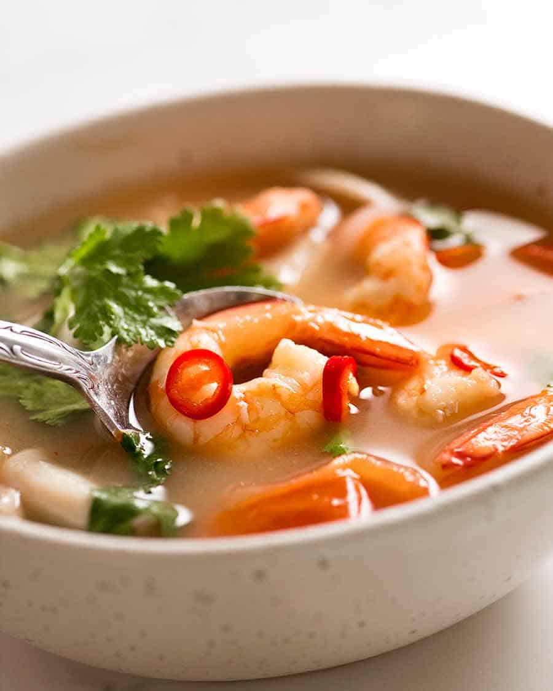

Tom Yum Soup

Description
Tom Yum Soup is a flavorful and aromatic Thai soup known for its spicy and sour taste, filled with fragrant herbs and shrimp.
Ingredients
- 500 grams shrimp, peeled and deveined
- 4 cups chicken or vegetable broth
- 2 stalks lemongrass, bruised
- 3 kaffir lime leaves
- 3 slices galangal or ginger
- 2 tablespoons fish sauce
- 1 tablespoon lime juice
- 2 tablespoons chili paste (optional)
- 1 cup mushrooms, sliced
- 1 small tomato, cut into wedges
- Fresh cilantro for garnish
Steps
- In a pot, bring the broth to a boil. Add lemongrass, kaffir lime leaves, and galangal or ginger, and simmer for 5 minutes.
- Add shrimp, mushrooms, and tomato to the pot and cook until the shrimp turns pink.
- Stir in fish sauce, lime juice, and chili paste (optional) for added spiciness.
- Simmer for a few more minutes and remove from heat.
- Garnish with fresh cilantro and serve hot.
Go back to home